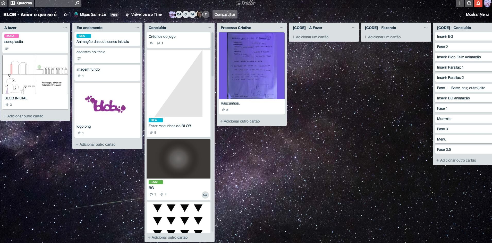

CONTEXT
BLOB is a platform game made on my first Game Jam. I worked as a game producer and level designer for the game. It was a 24h Game Jam for women only.
PROCESS
The theme of the Jam was "TO BE VS TO BECOME". We had 8h a day to make it work and very few people that had participated in Jams before or that worked with games.
The first thing we did was to brainstorm as many game ideas as we could, deciding to split the groups later according to the game that appealed the most to each of us. This is the first lesson I learned, it is way harder to narrow down ideas in a group of ten than it is on a group of three or five people. Smaller groups work faster.
By the end of the first 8h, we had the whole game planned. We thought about the mechanics, the art, which colors we wanted to use, how many levels it would have, all the cutscenes, what experiences we wanted to create and an ending for our formless being. We created a trello for the group with all the tasks that were necessary and split everything with the members. When we felt that things were organized enough we went home.
The game is about a formless being called BLOB. The background was supposed to be black and white and BLOB's color would change according to his mood. The main idea and experience that we wanted to present were that even though things might be difficult for you and you will struggle to overcome them, you will surpass the challenges and accept who you are.
We arrived on the morning of the 2nd day and started producing. That was the moment when I learned the second lesson. Get to know and understand the strengths and weakness of your team members so that the things you plan on creating, can actually be made. Planning is good, but keeping your ideas doable is more important.

I planned three levels for the game. Each to be played easily by a geometrical figure first, and later by BLOB. Initially, we planned on making them playable by the geometrical figures and after by BLOB. I finished the designs and started making a GDD. At the end of day 2 and the beginning of day 3 I learned the third lesson: you got to keep the scope within reason.
We started making cuts so that things would be finished on time. First cut to fit the scope was: we will make a cutscene instead of a level playable by different figures. Second cut: no cutscenes in between levels, let's present everything at the beginning of the game. Third cut: no cutscene at all. Just turn the idea into a diagram and hope players will understand.

By the end of the time we had to finish the jam almost all the group were waiting anxiously while the programmer finished the last things and started building a version that could be published on itch.io. We did not playtest the game. This was lesson four. Playtest your game whenever possible, so that you can keep bugs from growing and can find weird corner cases.
Final Outcome
At the end of the weekend I had my first game ever published. I had a lot of fun, met wonderful women that I cherish a lot and learned valuable lessons:
- Smaller groups work faster
- Get to know and understand the strengths and weakness of your team members
- Keep the scope within reason
- Playtest your game whenever possible